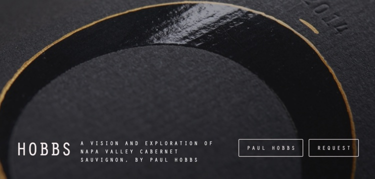
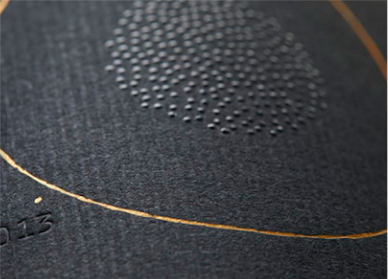
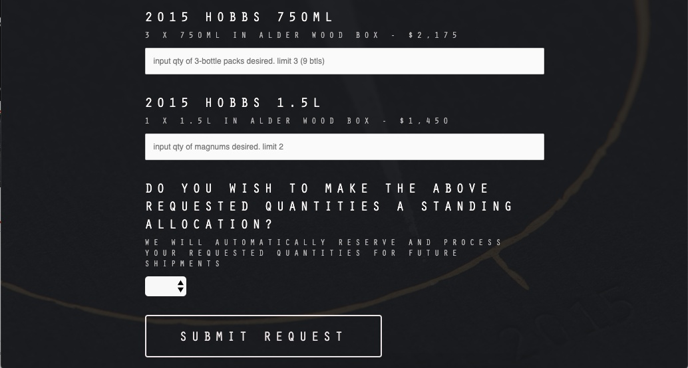

PAUL HOBBS WINES — HOBBS / Sonoma, California
Brand Creation & Launch
Strategy / Brand / Innovation / Digital
Work spanning branding, label design, new-product launch, website development and agency management. The project demonstrates the translation of a new brand concept across identity, packaging and digital consumer touchpoints.
THE WORK


